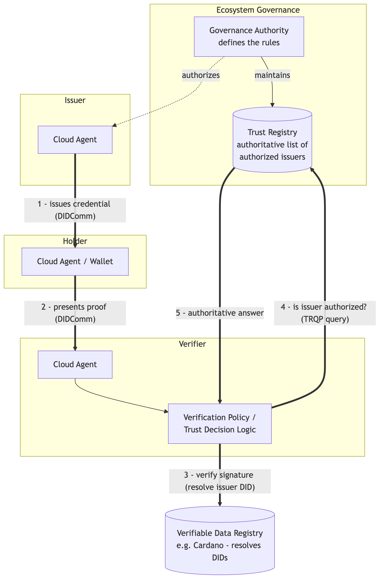

20 Trust Registries
Throughout this book we have followed credentials as they move between three roles: an issuer that signs a credential, a holder that stores and presents it, and a verifier that checks it. The cryptography we covered in Chapter 17 answers a precise question: was this credential really signed by the key it claims, and has it been tampered with? That is a powerful guarantee, but it is not the whole story. A valid signature only tells the verifier that some key signed the credential. It does not tell the verifier whether the entity behind that key should be believed.
Consider a verifier that receives a university degree credential. The signature checks out. But anyone can stand up an Identus Cloud Agent, mint a Published DID, and issue a credential that claims to be a degree from that same university. The cryptography on that forged credential is just as valid. What separates the real issuer from the impostor is not math, it is authority: the genuine university is recognized, within some community, as an entity that is allowed to issue degrees. A Trust Registry is the mechanism that captures and answers questions about that authority.
20.1 What a Trust Registry is
A Trust Registry is an authoritative, machine-readable list that records which entities are trusted to perform which roles within a particular community, or ecosystem. In its simplest form it answers a question like:
Is DID
did:prism:abc…authorized to issue a credential of typeUniversityDegreeunder the rules of this ecosystem?
The registry does not replace cryptographic verification; it sits alongside it. Verification proves who signed a credential. The Trust Registry proves whether that signer is recognized as an authority for what the credential asserts. A verifier needs both answers before it can safely act on a credential.
It is worth being precise about what a Trust Registry is not. It is not a certificate authority, and it does not issue or hold credentials itself. It is not a blockchain or a Verifiable Data Registry, although it may publish its data to one. It is a governed list, maintained by, or on behalf of, the body that defines the rules of an ecosystem. In the language of Self-Sovereign Identity, that body is the governance authority, and the document describing its rules is the governance framework. The Trust Registry is the queryable, runtime expression of that framework.
A few concrete examples make the idea easier to hold onto:
- A national education ministry maintains a registry of accredited universities that may issue degree credentials. A verifier checking a diploma asks the registry whether the issuing DID belongs to an accredited institution.
- A pharmacy board maintains a registry of licensed pharmacists. A system dispensing controlled medication asks whether the presenting practitioner’s DID is currently licensed.
- An aviation authority maintains a registry of approved maintenance organizations whose technicians may sign airworthiness credentials.
In each case the same pattern holds: a community with rules, a body that maintains the list, and verifiers that consult the list at the moment of decision.
Trust Registries are still an emerging part of the SSI landscape. Many production systems today rely on simpler mechanisms, such as a hard-coded list of trusted issuer DIDs configured directly in the verifier. Identus itself reflects this stage: as we saw in Chapter 17, its verification policies carry a trustedIssuers list scoped to a schema. A Trust Registry generalizes that idea into a shared, governed, externally queryable service. Much of what follows is therefore architectural and forward-looking rather than a description of widely deployed software.
20.2 Where a Trust Registry sits in the architecture
The cleanest way to understand a Trust Registry is to see where it fits among the components we have already built. A Trust Registry is an external service that the verifier consults, separately from the credential exchange itself. It is not part of the DIDComm connection between holder and verifier, and the holder typically never touches it.
The diagram below shows a production-quality SSI deployment. The issuer, holder, and verifier each run an Identus Cloud Agent. Credentials are exchanged over DIDComm, routed through mediators as needed. DIDs are resolved against a Verifiable Data Registry. The Trust Registry stands to one side, queried by the verifier when it needs to make a trust decision.

Reading the flow from the verifier’s point of view:
- The issuer issues a credential to the holder over DIDComm, exactly as described in Chapter 16.
- Later, the holder presents a proof to the verifier over an existing DIDComm connection.
- The verifier cryptographically verifies the presentation, resolving the issuer’s DID against the Verifiable Data Registry to check the signature.
- The verifier asks the Trust Registry whether the issuer’s DID is authorized to issue this credential type under the relevant governance framework.
- The Trust Registry returns an authoritative answer, which the verifier feeds into its final accept-or-reject decision.
Two properties of this layout matter. First, the Trust Registry query is out of band with respect to the credential exchange. It happens between the verifier and the registry; the holder is not involved and need not even know which registry the verifier consults. Second, trust verification and signature verification are deliberately separate steps. As noted in Chapter 17, a deployment using an external trust registry should keep the registry lookup separate from proof verification: the verifier resolves the trusted issuer set for the requested schema, then passes that result into its policy decision. A credential can be cryptographically perfect and still be rejected because its issuer is not in the registry.
20.3 The ToIP Trust Registry Query Protocol (TRQP) 2.0
If every ecosystem invented its own way of exposing a Trust Registry, verifiers would need bespoke integration code for each community they interact with. The Trust Over IP Foundation (ToIP), which we introduce further in Chapter 21, addresses this with the Trust Registry Query Protocol (TRQP). Its 2.0 specification defines a standard, read-only way to ask a Trust Registry whether an entity holds a given authorization within a given ecosystem.
A useful analogy from the specification is that TRQP is to trust registries what DNS is to name servers: a lightweight, universal query layer that lets any participant look up authoritative answers without knowing the internal implementation of the registry being queried. The protocol centers on two kinds of question:
- Authorization queries — Does entity X hold authorization Y under the governance framework of ecosystem Z? This is the question our verifier asks: is this issuer allowed to issue this credential type?
- Recognition queries — Does this ecosystem recognize that other ecosystem (or registry) as authoritative? This lets distinct communities acknowledge one another, so that trust can chain across organizational boundaries rather than stopping at the edge of a single registry.
Because the protocol is standardized and intentionally minimal, it is what allows different SSI applications and organizations to interoperate. A verifier built on Identus and a Trust Registry maintained by an unrelated organization can interact as long as both speak TRQP, without either side adopting the other’s stack. The specification separates the core protocol from its transport bindings; the initial binding defines TRQP over HTTPS using an OpenAPI definition, with room for future bindings such as DIDComm. Crucially, TRQP is read-only: it queries trust data but never creates or modifies what lives inside a registry. How a registry’s contents are populated and governed remains the responsibility of the ecosystem’s governance authority.
For the full details, including the data model and the API definition, see the approved specification: ToIP Trust Registry Query Protocol (TRQP) v2.0.
20.4 Trust Registries and Identus today
Identus does not ship a built-in Trust Registry, and at the time of writing very few Trust Registries are running in production anywhere. What Identus gives you are the pieces a Trust Registry decision plugs into. As covered in Chapter 17, a verifier’s verification policy already expresses a trustedIssuers set scoped to a schemaId. You can think of an external Trust Registry as the place that set should ultimately come from in a mature ecosystem: instead of hard-coding trusted issuer DIDs in each verifier, the verifier’s controller queries a registry over TRQP, resolves the current authorized issuers for the credential type, and applies that result in its policy decision.
This keeps the architecture clean and future-proof. Your verifier’s cryptographic checks stay where they are. The trust decision becomes a separate, swappable lookup, one that can start life as a static list during development and grow into a governed, TRQP-speaking registry as the ecosystem around your application matures.
Because Trust Registries are early in their adoption curve, treat this chapter as a map of where the ecosystem is heading. If you are building today, the practical advice is to keep your trust decision logic isolated from your verification logic, so that swapping a static issuer list for a real Trust Registry later is a localized change rather than a rewrite.